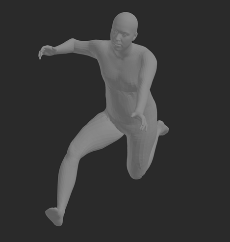
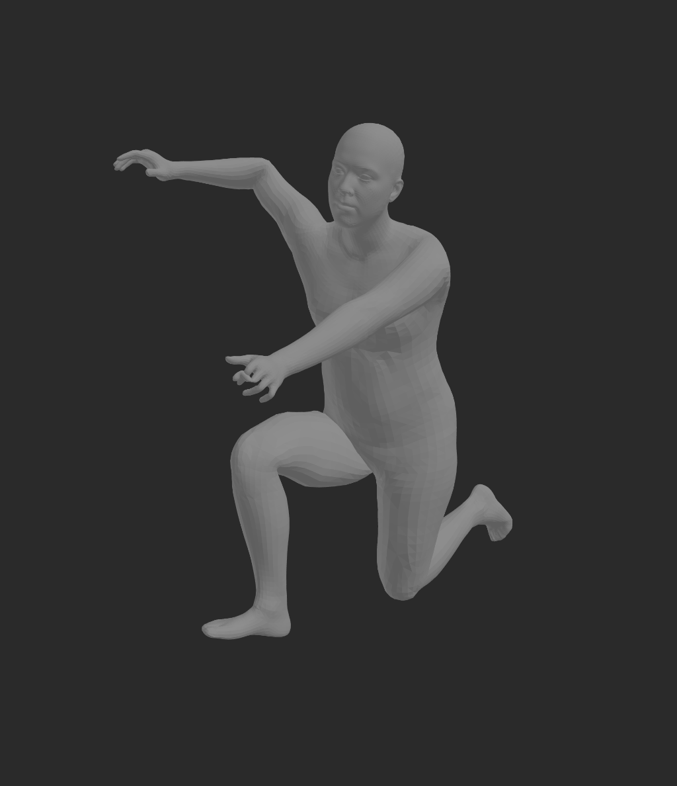
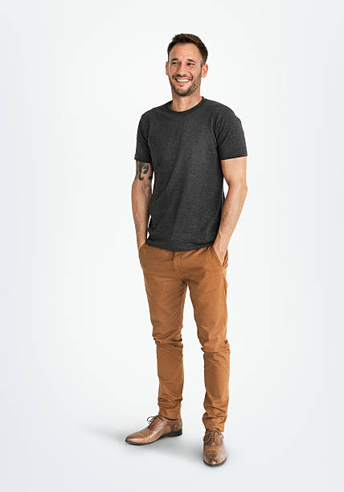
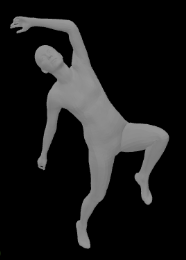
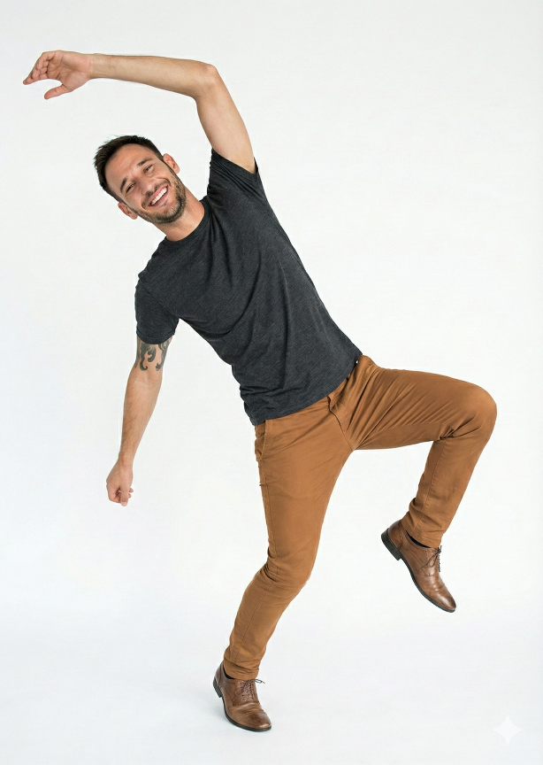
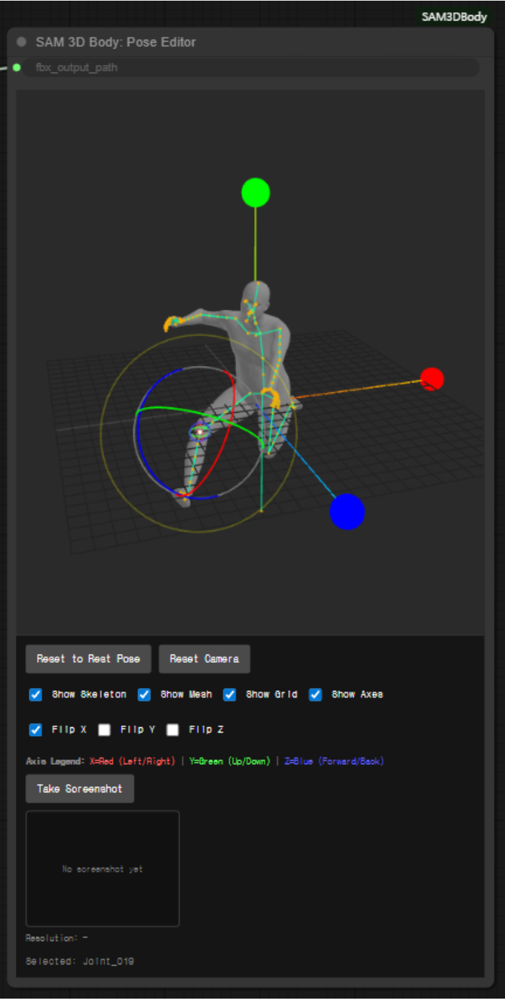
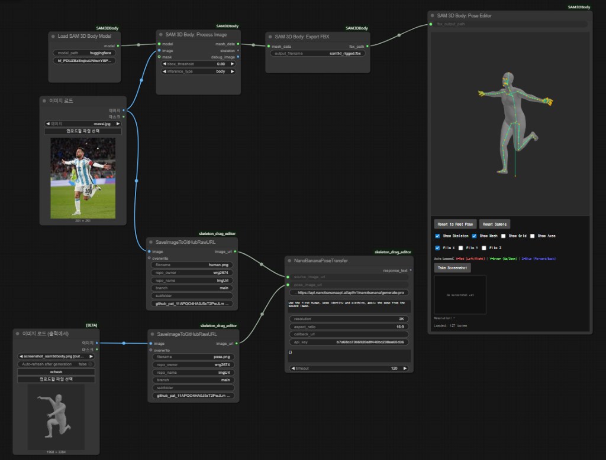

2025 Creative Independent Research Project (창의자율과제)
Character-Preserving Pose Refinement in Generative AI Image Generation Pipelines
Interactive pose and composition editing for AI-generated character images
Sejong University
We address a common image generation problem: the character looks right, but the pose or composition does not. The pipeline keeps the character appearance and style while letting the user refine the body pose through a 3D control workflow.
- ComfyUI
- SAM3Dbody
- 3D Pose Control
- Generative Editing
Final Result Examples
Source image and target pose are combined to produce a pose-refined output while preserving the character's visual identity.






Method Overview
The system uses SAM3Dbody to recover a rigged 3D body from a single image, lets the user adjust joints directly in ComfyUI, and sends the edited pose with the source image to the generation API.
3D Pose Extraction
SAM3Dbody extracts a rigged pose from a single character image.
Interactive Editing
A custom ComfyUI node supports joint selection, drag rotation, and screenshot capture.
Pose Transfer
The edited pose image and source character image are sent to the generation API.

Pipeline
The pipeline was designed as a controllable editing loop rather than a repeated prompt trial-and-error process.

- InputLoad the character image whose appearance should be preserved.
- 3D pose extractionSAM3Dbody converts the person into a controllable rigged pose.
- Pose editingSelect joints and rotate them directly inside the custom ComfyUI node.
- GenerationSend the source image and edited pose image to generate the refined result.